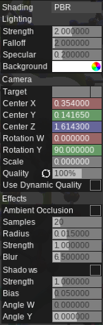

The inspector tab is the tab on the left.
The particles tab lists the molecular information in the scene. When a protein is present, you can switch between atom view and protein view using the topmost buttons.
Atoms are grouped in order of Residues.

Shift-click to select multiple residues. Selecting an atom will shade the atom in green. Double click to focus on the atom selected.
Proteins are grouped by chains.
Graphics settings adjust how the scene is displayed.
Shading
Classic
The scene is colored using Lambert and Blinn-Phong lighting. Slightly faster but lower quality.
PBR
The scene is colored using physically-based materials and environment maps. Higher quality but slightly slower.
Strength: Strength of diffuse lighting (environment strength).
Falloff: How much the light gets weaker when further away from the camera.
Specular: The strength of reflection. For PBR, diffuse intensity = 1 - specular intensity.
Background: Background color.
Target: always focus on particle(s) during animations.
Center X,Y,Z: Center of camera rotation.
Rotation W, Y: Angle of camera.
Scale: Zoom factor of camera.
Quality: Draw quality of scene.
Use Dynamic Quality: Use a different quality when camera is moving. Suitable for heavy scenes.
Quality 2: Draw quality of scene when camera is moving.
Ambient occlusion: Darken creases between near objects. Might slow down the scene substantially.
Shadows (WIP): Directional shadows. Very heavy calculations as the scene is drawn 2 times.